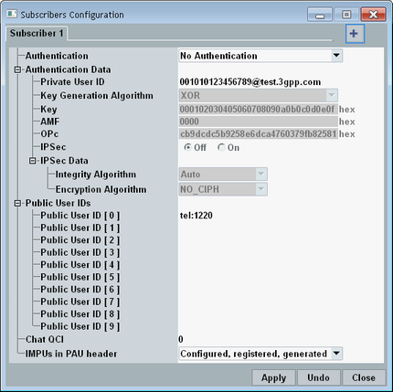

Press the "Subscriber" hotkey to open the "Subscribers Configuration" dialog box.
It configures profiles for tested DUTs.
You can create up to five subscriber profiles with different private user IDs and properties. Each profile is displayed on a separate tab. Profile 1 is always available.

A profile is selected automatically when a SIP message from the DUT is received. The user ID included in the SIP message is compared to the user IDs in the profiles. Depending on the message type, the DUT sends a public user ID or a private user ID. A profile contains one private user ID and up to 10 public user IDs.
If you have several DUTs with the same test SIM card, you can use the same subscriber profile for all these DUTs.
The settings are explained in the following.
 creates a tab / subscriber. The maximum number of tabs is five.
creates a tab / subscriber. The maximum number of tabs is five.
 deletes the currently selected tab. Tab 1 cannot be deleted.
deletes the currently selected tab. Tab 1 cannot be deleted.
Specifies whether authentication is performed during the registration procedure and selects the authentication and key agreement (AKA) version to be used (see RFC 3310 and RFC 4169).
If authentication is enabled, the settings in section "Authentication Data" must be compatible to the DUT. And the authentication and key agreement version must be supported by the DUT. Otherwise, registration fails.
Authentication often requires a test ISIM. An appropriate ISIM can be obtained from Rohde & Schwarz (R&S CMW-Z04, stock no. 1207.9901.02). The default settings are compatible to this ISIM.
Remote command:If you use authentication, enter the private user ID as stored on the ISIM or in the DUT. If the private user ID of the DUT is not assigned to any subscriber profile, authentication fails.
If you are not sure which ID is used by your DUT, you can analyze SIP REGISTER messages sent by your DUT. The private user ID is contained in the header as username="...".
If you do not use authentication, you can enter any private user ID. But each subscriber profile must have a different private user ID.
Remote command:Specifies which algorithm set is used by the ISIM: MILENAGE algorithms (see 3GPP TS 35.205) or XOR algorithms.
Remote command:The authentication key K is used for the authentication procedure (including a possible integrity check). The value is entered as 32-digit hexadecimal number.
The key K must be equal to the value stored on the test ISIM or the DUT. Otherwise authentication fails.
Remote command:Specifies the authentication management field (AMF) to be used for the authentication procedure. The value is entered as four-digit hexadecimal number.
Remote command:The key OPc is used for authentication and integrity check procedures with the MILENAGE algorithm set. If you use this algorithm set, specify the OPc used by the ISIM. The value is entered as 32-digit hexadecimal number.
Remote command:Specifies whether the IMS server supports IP security mechanisms.
If IPsec is supported by the IMS server but not by the DUT, the session is not rejected. It is established without IPsec.
To use Wireshark for connections with IPsec, see "Configuring Wireshark for IPsec".
Remote command:Selects an algorithm for integrity protection via IPsec. The supported algorithms are HMAC-MD5-96 (see RFC 2403) and HMAC-SHA-1-96 (see RFC 2404).
"Auto" uses the algorithm indicated by the DUT in the REGISTER message.
Configure this setting compatible to your DUT.
Remote command:Selects an algorithm for encryption via IPsec. The supported algorithms are DES-EDE3-CBC (see RFC 2451) and AES-CBC (see RFC 3602). NO_CIPH means no encryption/ciphering.
"Auto" uses the algorithm indicated by the DUT in the REGISTER message.
Configure this setting compatible to your DUT.
Remote command:If the DUT sends a public user ID that is not assigned to any subscriber profile, the first profile is used. So for tests with this profile, you do not need to enter public user IDs.
To use another profile, enter all public user IDs stored on the ISIM or in the DUT. Do not assign the same user ID to several profiles. Each ID must start with "tel:", "sip:" or "sips:".
A four-digit number is automatically assigned to each profile.
Remote command:Specifies the QoS class identifier (QCI) used by the DUT for RCS message transfer.
Remote command:Selects which public IDs are sent to the DUT in the PAU header of the 200/OK response to REGISTER messages.
IMPU stands for IP multimedia public identity. PAU stands for p-associated-URI.
Your selection determines which IDs are sent and in which order they are included in the header. You can select between combinations of the following IDs.
"Configured" | The public user IDs configured in this dialog box. |
"Registered" | The ID sent by the DUT in the "from" header of the REGISTER message. |
"Generated" | The automatically generated ID starting with "tel:555", followed by a four-digit number. |
"Apply" applies all changes.
"Undo" discards all not yet applied changes.
"Close" closes the dialog box. Not yet applied changes are discarded.